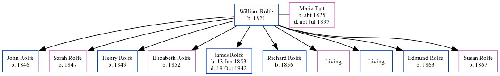

William Rolfe 1821 - [ Home ] | [ Calendar ] | [ Surnames Index ] | [ Family History ]William Rolfe , the husband of Maria Tutt (the three times great-aunt of Nigel Horne ), was born in Burmarsh, Kent, England in 18211,2,3 and married Maria (with whom he had 10 children: John , Sarah , Henry , Elizabeth , James , Richard , Maria , William George , Edmund and Susan J , along with 2 surviving children) in Elham, Kent, England around Nov 18444 .
Throughout his life, he lived at Cheriton Street, Cheriton, Kent on Mar 30, 18511 ; and at Horn Street, Cheriton, Kent on Apr 7, 18612 , on Apr 2, 18713 and on Apr 3, 18815 .
Children John was born in 1846Sarah was born in 1847Henry was born in 1849Elizabeth was born in 1852James was born on Jan 13, 1853Richard was born in 1856Edmund was born in 1863Susan J was born in 1867Citations 1851 England, Wales & Scotland Census - Findmypast (was age 30 and the head of the household) 1861 England, Wales & Scotland Census - Findmypast (was age 40 and the head of the household) 1871 England, Wales & Scotland Census - Findmypast (was age 50 and the head of the household) England & Wales Marriages 1837-2005 - Findmypast 1881 England, Wales & Scotland Census - Findmypast (was age 60 and the head of the household) Media 1881 England, Wales & Scotland Census Transcription - GBC-1881-0004958462 1851 England, Wales & Scotland Census Transcription - GBC-1851-0005970052 Family Tree Map
Generated by Ged2Site . Last updated on Apr 1, 2025